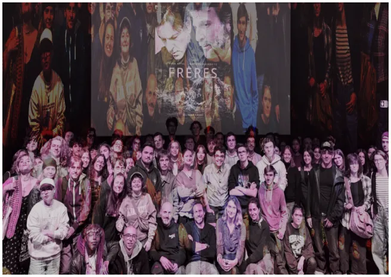
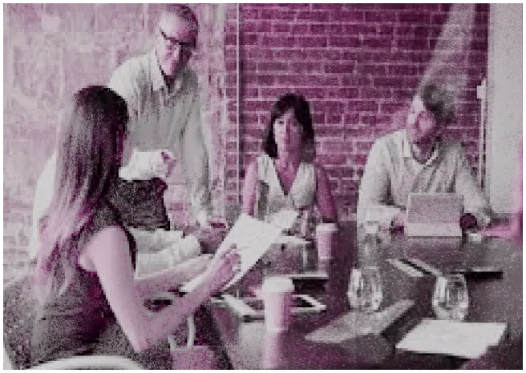
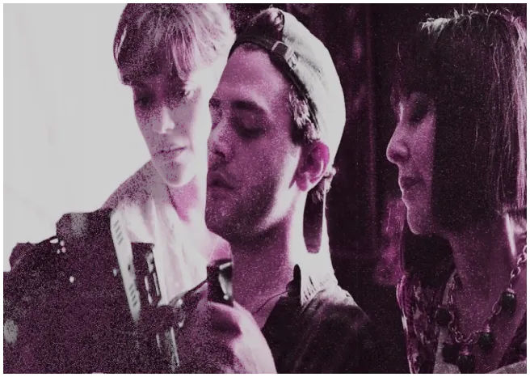

ON EST LÀ POUR CHAMBOULER LE CINÉMA MAINSTREAM !
Notre mission : promouvoir un cinéma qui en jette !
Historique
Né de l'envie de bousculer les codes, le festival Les Ciné-Échos a vu le jour à Héricourt pour offrir une scène aux voix émergentes du 7ème art.
Notre objectif ?
Créer un espace où le cinéma d’auteur indépendant peut résonner dans nos bichromes. Passion, une rampe, nous favorisons Héricourt en un carrefour d’échanges entre réalisateurs audacieux, cinéphiles passionnés et spectateurs curieux.
Notre équipe
Des passionnés un peu fous !
L'équipe des Cinés-Echos est composée de passionnés de cinéma et de professionnels engagés. Ensemble, ils œuvrent pour offrir un festival unique dédié au cinéma indépendant et aux jeunes réalisateurs. Directrice : Alice Frelin Nos partenaires : des rebelles comme nous
Nos valeurs
Notre credo
l'audace, la créativité et l'ouverture d'esprit. Les Ciné-Échos, c'est :
- Un tremplin pour les jeunes réalisateurs qui osent
- Un lieu de rencontre entre créateurs et public
- Une immersion totale dans l'univers du cinéma, des premières caméras aux dernières technologies
Cette année, on mise sur l'interactivité et l'innovation.
Au programme : projections en 3D, séances nocturnes dans des lieux insolites, ateliers de réalisation, et même un concours de micro-films façon TikTok !
Nos partenaires ?
Des rebelles comme nous, prêts à bousculer les conventions !